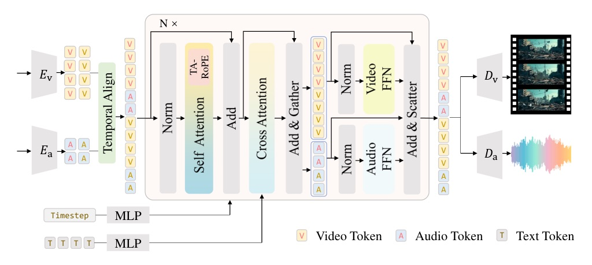
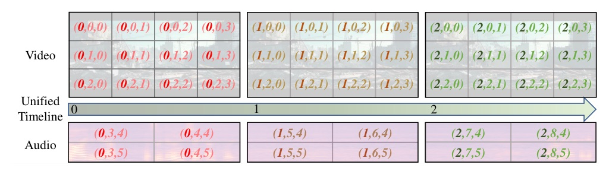
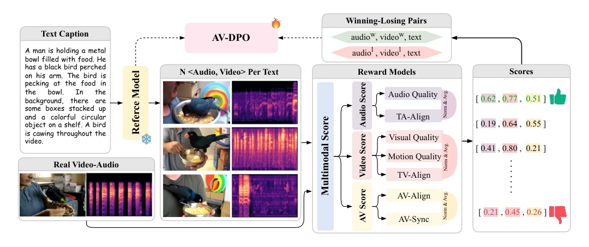

ICLR 2026 poster · Native text-to-audio-video generation built on Wan2.1-1.3B-T2V.
A 2.1B open JAVG model beats larger prior systems by making time shared, modalities separated, and preference pairs modality-aware.



| Stage | Trainable params | Samples | LR | Epochs | GPU-days |
|---|---|---|---|---|---|
| Audio PreTrain | 794M | 780K | 1e-4 | 50 | 16 |
| Audio-Video SFT | 121M | 330K | 1e-4 | 2 | 16 |
| Audio-Video DPO | 121M | 25K | 1e-5 | 1 | 3 |
| Model | Size | FVD↓ | FAD↓ | JavisScore↑ | DeSync↓ | Runtime↓ |
|---|---|---|---|---|---|---|
| JavisDiT | 3.1B | 204.1 | 7.2 | 0.154 | 1.039 | 30s |
| UniVerse-1 | 6.4B | 194.2 | 8.7 | 0.077 | 0.929 | 13s |
| JavisDiT++ | 2.1B | 141.5 | 5.5 | 0.159 | 0.832 | 10s |
| Design | FVD↓ | FAD↓ | AV-IB↑ | JavisScore↑ | DeSync↓ |
|---|---|---|---|---|---|
| Shared-DiT + LoRA | 227.6 | 6.51 | 0.127 | 0.098 | 0.934 |
| Shared-DiT + Full-FT | 269.3 | 5.66 | 0.164 | 0.137 | 0.945 |
| MS-MoE | 221.3 | 5.51 | 0.194 | 0.153 | 0.807 |
| Mechanism | JavisScore↑ | DeSync↓ | Latency↓ |
|---|---|---|---|
| None | 0.142 | 0.942 | 1m4s |
| ST-Prior | 0.145 | 0.863 | 1m10s |
| FrameAttn | 0.124 | 0.850 | 1m22s |
| TA-RoPE | 0.153 | 0.807 | 1m4s |
| TA-RoPE + FrameAttn | 0.151 | 0.802 | 1m22s |
The core insight is coordinate hygiene: share only the temporal axis, never let audio frequency coordinates collide with video spatial coordinates.
| Reward design | FVD↓ | FAD↓ | TV-IB↑ | TA-IB↑ | AV-IB↑ | JavisScore↑ | DeSync↓ |
|---|---|---|---|---|---|---|---|
| None baseline | 221.3 | 5.51 | 0.283 | 0.163 | 0.194 | 0.153 | 0.807 |
| Average-Micro | 199.7 | 5.28 | 0.281 | 0.166 | 0.199 | 0.154 | 0.810 |
| Modality-Micro | 198.5 | 5.32 | 0.284 | 0.168 | 0.201 | 0.156 | 0.776 |
| Modality-Micro w/o gt | 234.7 | 5.43 | 0.281 | 0.164 | 0.197 | 0.154 | 0.833 |
“we introduce a modality-specific mixture-of-experts (MS-MoE) design that enables cross-modal interaction efficacy while enhancing single-modal generation quality.”
作者把音訊與影片的互動交給共享 attention，把各自的細節建模交給 modality-specific FFN。Abstract p.1
“although the total parameter size increases from 1.3B to 2.1B, the number of activated parameters per token remains 1.3B.”
容量增加，但每個 token 實際啟用的參數量不變；這是 MS-MoE 的效率關鍵。§3.2 p.5
“absolute temporal alignment is enforced along the first dimension (dimension 0) of the 3D position IDs for both audio and video tokens.”
音訊與影片共享同一條時間軸，讓同步關係直接進入 RoPE 座標。§3.3 p.5
“we offset the original mel-spectrogram dimensions (Ta and M) by adding H and W, respectively.”
非時間座標被刻意錯開，避免音訊頻率座標和影片空間座標互相污染。§3.3 p.5
“winning pairs from our generated samples occupy around 30% of the total preference data.”
參考模型本身已不弱，所以偏好資料不能只靠生成候選之間的微小差異；混入 ground truth 能穩定信號。§3.4 p.6
“applying modality-agnostic strategies like Average-Micro and Average-Macro fails to achieve consistent improvements.”
JAVG 的偏好排序如果只平均成單一分數，很容易選到跨 modality 互相矛盾的勝者。§4.3 p.9
Attention, kernels, serving systems, or hardware-aware tricks — if discovery cooperates better than arXiv did today.